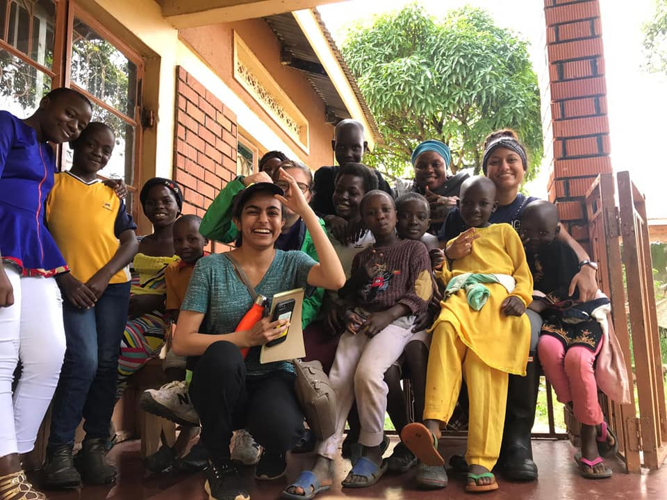
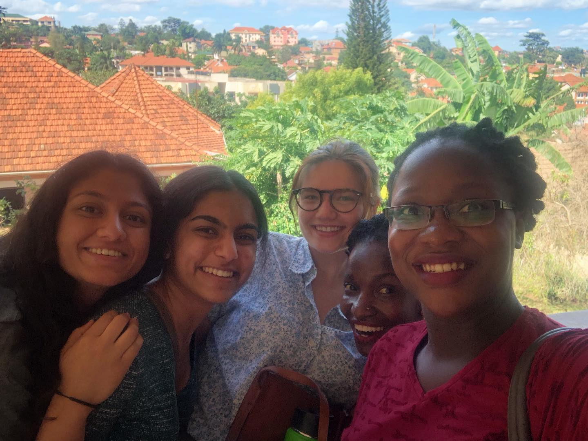
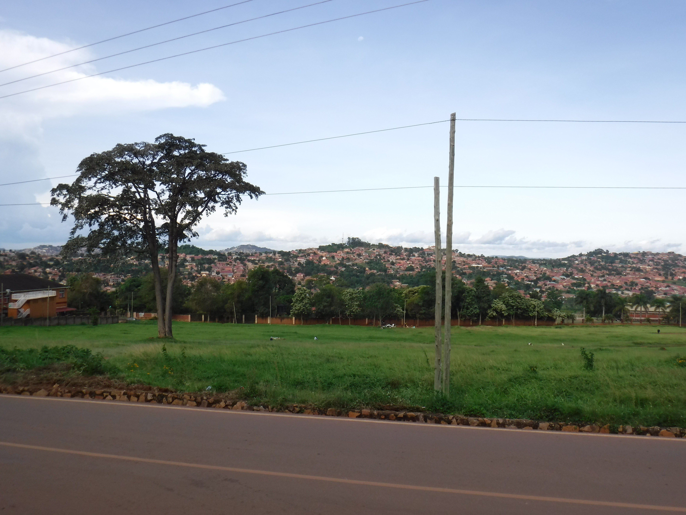
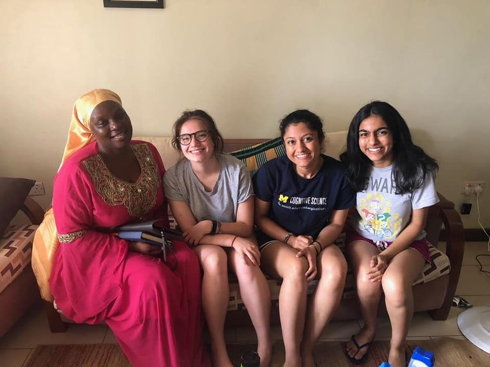

- University of Michigan, School of Information - Ann Arbor, MI
- Bachelor of Science in Information, Concentration in User Experience Design
- Minor in Creative Writing, Poetry
- Expected Graduation: April 2021
- GPA: 3.29/4.0
- Relevant Coursework: Data-Oriented Programming, Statistics and Data Analysis, Programming and Introductory Data Structures, Discrete Math
Education
Experience
Research Assistant
Photos from Uganda Research Trip
 Client Support Intern
Client Support Intern
Member
- University of Michigan, Ann Arbor, MI
- September 2017 – Present
- Assisted in web development of tailored mobile site for self-management of HIV/AIDS for adolescents in Uganda Conducted pilot tests of mobile site with users from target demographics in Kampala, Uganda
- Coded and designed front end of the mobile site using CSS/HTML/Javascript/Bootstrap Developed content for mobile site through qualitative analysis of interviews
- Analyzed data for 80+ countries about questions pertaining to sexual abuse
- Maintained database using MySQL and Flask through Amazon Web Services
Photos from Uganda Research Trip



- Verint Systems, Ann Arbor, MI
- July 2019 - December 2019
- Provided technical product/service information for the Foresee Customer Experience model
- Assessed client IT knowledge levels and tailor responses appropriately Resolved emerging problems that clients face with accuracy and efficiency
- Utilized Toad, Eclipse, and SQL to assess client code packages
Member
- Michigan Research Community, Ann Arbor, MI
- September 2017 - April 2018
- Residential Affiliate of the Undergraduate Research Opportunity Program (UROP)
- Presented research poster at annual symposium
- Participated in monthly research seminars with various distinguished University of Michigan faculty
Activities
Events Lead Coordinator
Undergraduate Student Writer
- What the F Magazine
- September 2019 – Present
- Events Coordinator
- September 2017 – April 2019
- Organized socially-conscious discussions and launch events for an intersectional feminist art and literary magazine
- Planned logistics of campus-wide magazine distribution
- Check out the Blog
Undergraduate Student Writer
- Cafe Shapiro
- December 2018–April 2019
- Nominated by Creative Writing teacher for outstanding classwork
- Published three poems in 22nd annual anthology
- Participated in live poetry reading for study breaks put on by Shapiro Undergraduate Library
Skills
- Proficient in C++, C, Python, CSS, HTML, Microsoft Office Suites (Excel, Word, PowerPoint, Visual Studio)
- Experienced with Adobe Photoshop, Adobe InDesign, iMovie, MySQL, Flask, Eclipse, Toad
- Leadership, Writing, Research, Communication, Data Analysis, Public Speaking